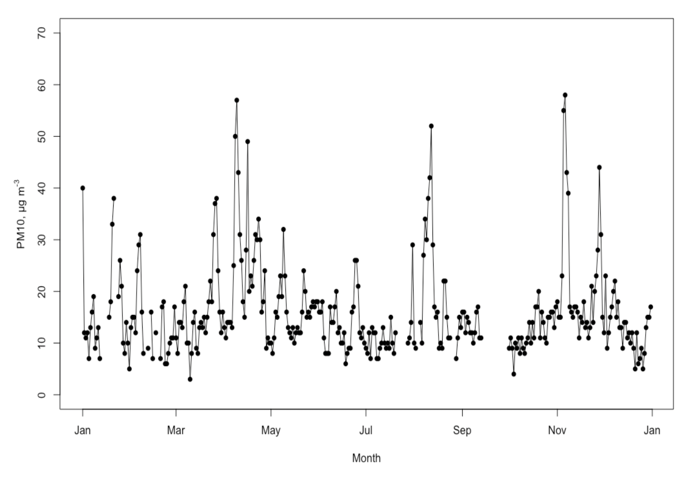

GEOG0014 Air Quality Practical
Introduction to analysis of air-quality data
In this practical, you’ll be plotting and undertaking some statistical analysis of air-quality data from Camden. You will use and build on some of the techniques you learned earlier in the term in this module, and in Term 1 in GEOG0013 Geography in the Field 1.
Prof Jonathan A. Holmes
Department of Geography | Room 211 NW Wing
